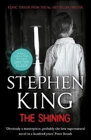

Where the hallways are *too long*, the rooms have *too much history*, and **your dad might go insane**. 🌨️😱
Jack Torrance takes his family to **The Overlook Hotel** for a peaceful winter getaway. Except... the hotel is *not empty*. The ghosts are *not friendly*. And Jack? Well, let’s just say he’s **not winning Father of the Year**. 🪓😵
✔️ If you love **psychological horror and haunted hotels**. 🏨
✔️ If you want a **terrifying lesson in “family vacations gone wrong”**. 🪓
✔️ If you enjoy reading something that will make you **leave the lights on at night**. 😨
(*Seriously. Keep an axe nearby. Just in case.* 😬)
"Here's Johnny!"
"REDRUM. REDRUM. REDRUM."
"Some places are like people: some shine and some don't."